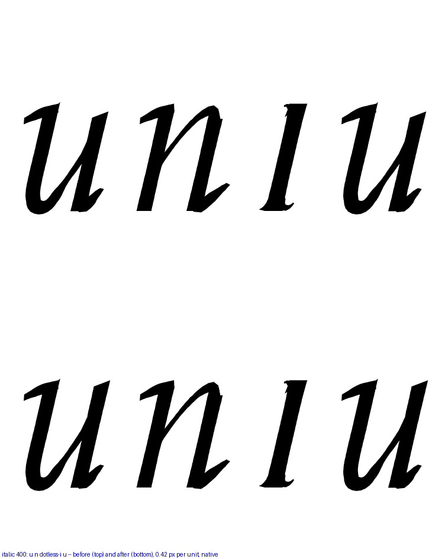
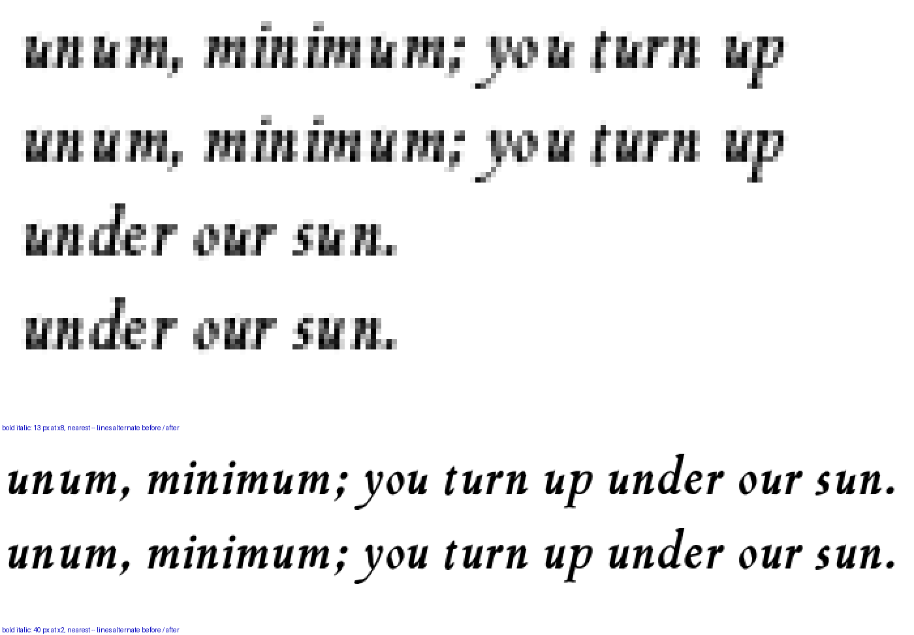

The right stem’s top, on the x-height in both italics. It was drawn to 0.985 of the x-height with the stem helper’s default top cut — the face cut down for a head to lie across, on the one stem that gets no head — and the cut’s drop grows with the weight. Top row before, bottom row after. Native pixels.
| face | u left stem | u right stem before | after | n left / right |
|---|---|---|---|---|
| Italic 400 | 423 | 400 | 431 | 422 / 424 |
| Bold Italic 700 | 426 | 368 | 431 | 426 / 437 |
| every roman face | 430 | 430 | 430 | 430 / 433–436 |

